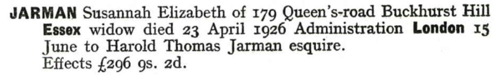
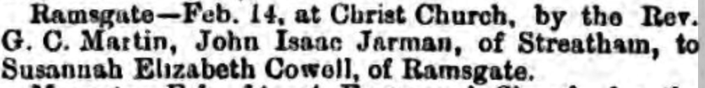
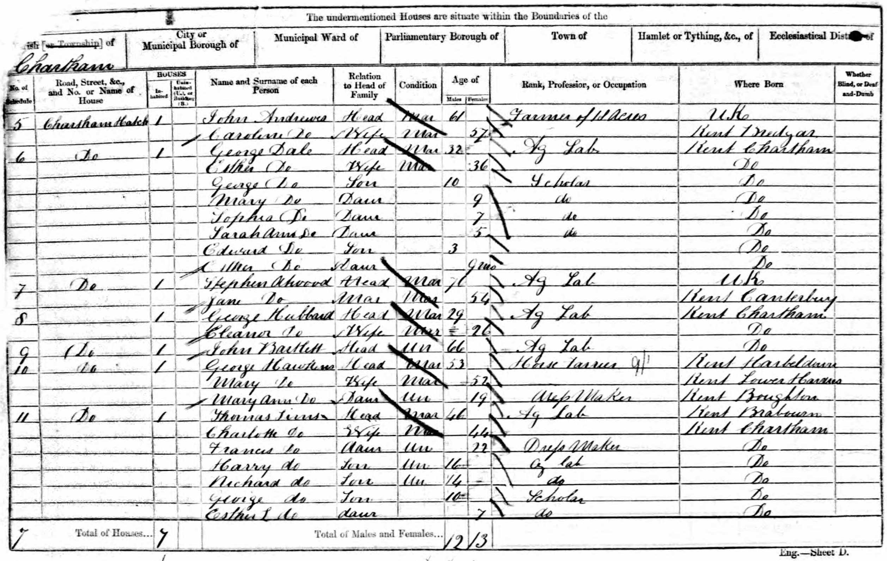
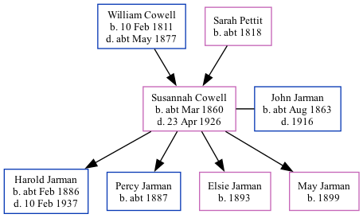

Susannah Elizabeth Jarman (née Cowell) cMar 1860 - 1926
[ Home ] | [ Calendar ] | [ Surnames Index ] | [ Family History ]A housemaid and the child of William Cowell (a mariner) and Sarah PettitSusannah Cowell, the second cousin three-times-removed on the mother's side of Nigel Horne, was born in St Peters, Thanet, Kent, England c. Mar 18601,2,3, was baptized in Broadstairs, Kent, England on Mar 25, 1860 and married John Jarman (a bookstall manager with whom she had 4 children: Harold Thomas, Percy, Elsie and May) at Christ Church, Ramsgate, Kent, England on Feb 14, 18856.
Throughout her life, Susannah lived in several places: at 1 Nelson Place, St Peters, Thanet, Kent on Apr 7, 186111 and on Apr 2, 18717; at Willesborough House, Willesborough, Kent in 18811; at Hambro Road, Streatham, London, England on Apr 5, 189110; at Penwortham Road, Wandsworth, London on Apr 2, 19119; at 54 Coldershaw Road, West Ealing, London on Jun 19, 19218; and at 179 Queen's Road, Buckhurst Hill, Essex, England in 1926.
She died on Apr 23, 1926 in Epping, Essex, England3,4,5 and was buried at Hanwell Cemetery, Hanwell, London on Apr 24, 19263.
Parents
- William Castle was born on Feb 10, 1811
- Sarah Ann was born c. 1818
Children
- Harold Thomas was born c. Feb 1886
- Percy was born c. 1887
- Elsie was born in 1893
- May was born in 1899
Citations
- 1881 England, Wales & Scotland Census - Findmypast
- England & Wales births 1837-2006 - Findmypast
- Westminster Burials - Findmypast
- England & Wales Government Probate Death Index 1858-2019 - Findmypast
- England & Wales deaths 1837-2007 - Findmypast
- England & Wales Marriages 1837-2005 - Findmypast
- 1871 England, Wales & Scotland Census - Findmypast (was age 11 and the daughter of the head of the household)
- 1921 Census Of England & Wales - Findmypast (was age 63 and the head of the household)
- 1911 Census for England & Wales - Findmypast (was age 49 and the wife of the head of the household)
- 1891 England, Wales & Scotland Census - Findmypast (was age 30 and the wife of the head of the household)
- 1861 England, Wales & Scotland Census - Findmypast (was age 1)
Media
Susannah Cowell - probate

Thanet Advertiser 21 Feb 1885

1861 UK Census

1871 England, Wales & Scotland Census - GBC/1871/0014311081
England & Wales births 1837-2006 - BMD/B/1860/2/AZ/000244/092
England & Wales marriages 1837-2008 - BMD/M/1885/1/AZ/000049/351
Kent, Canterbury Archdeaconry marriages 1538-1928 - GBPRS/CANT/M/97047475/2
England & Wales deaths 1837-2007 - BMD/D/1926/2/AZ/000473/039
1891 England, Wales & Scotland Census - GBC/1891/0003863550
1911 Census for England & Wales - GBC/1911/RG14/02346/0323/2
Kent, Canterbury Archdeaconry Baptisms - GBPRS-CANT-B-96312343
1861 England, Wales & Scotland Census - GBC-1861-0003552703
1881 England, Wales & Scotland Census - GBC-1881-0004695718
England & Wales Government Probate Death Index 1858-2019 - GBOR/GOVPROBATE/C/1926-1926/00046491
1921 Census of England & Wales - GBC/1921/RG15/06293/0651/01
Family Tree
Generated by ged2site. Last updated on Nov 13, 2024